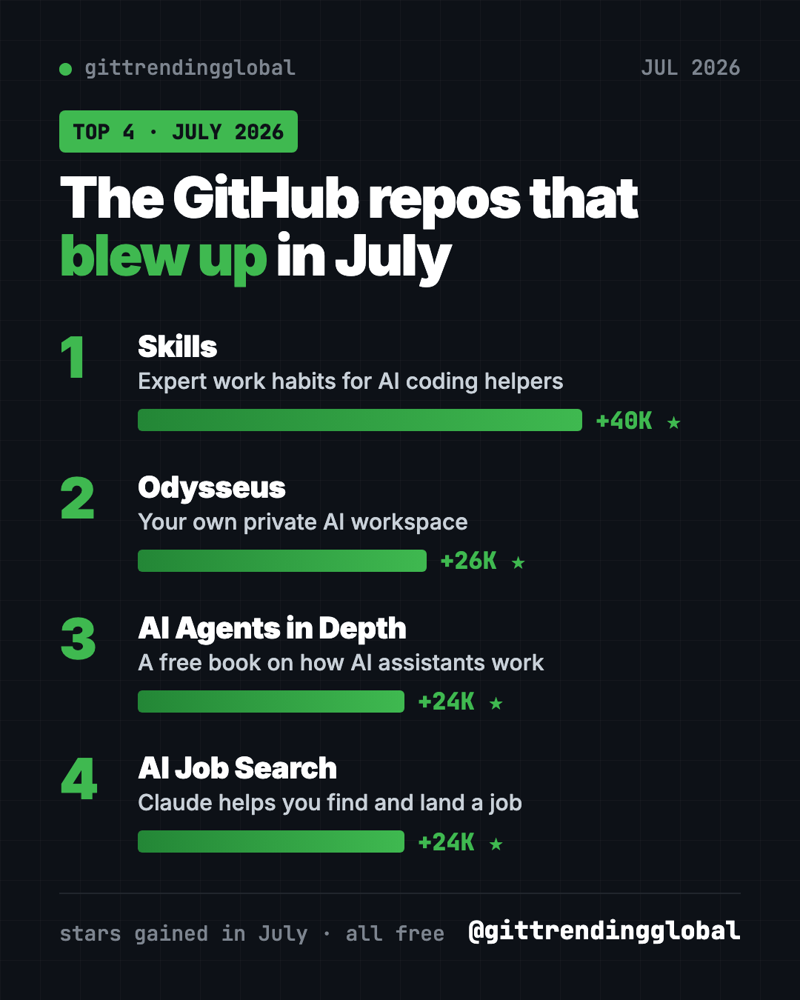
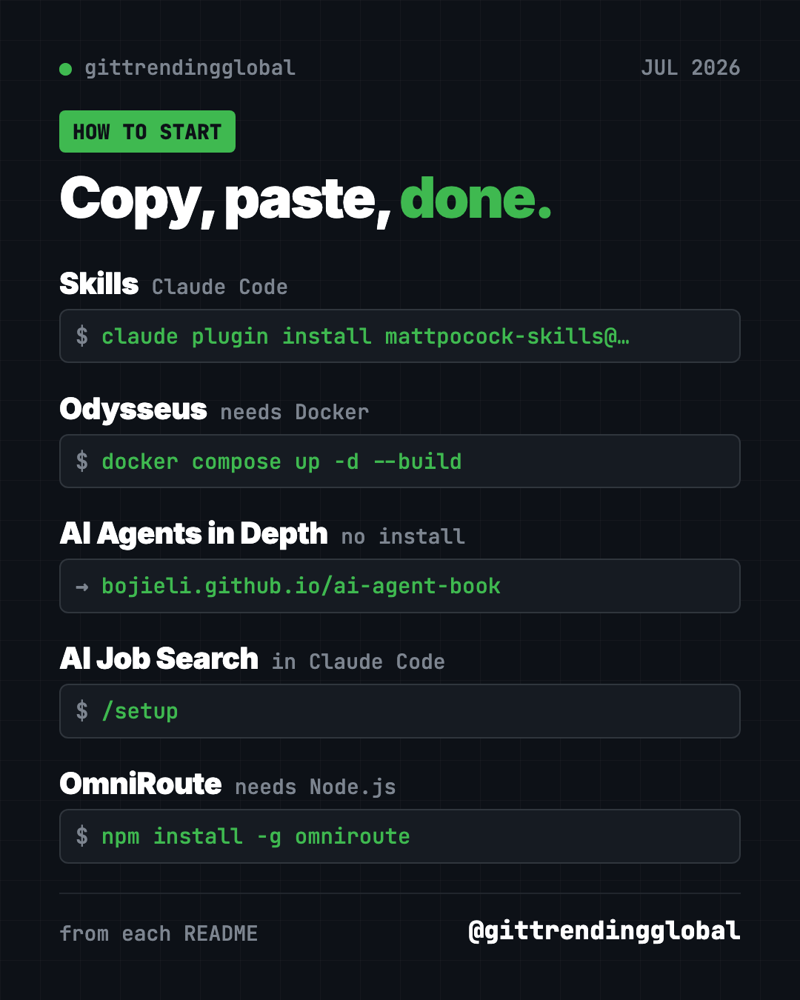
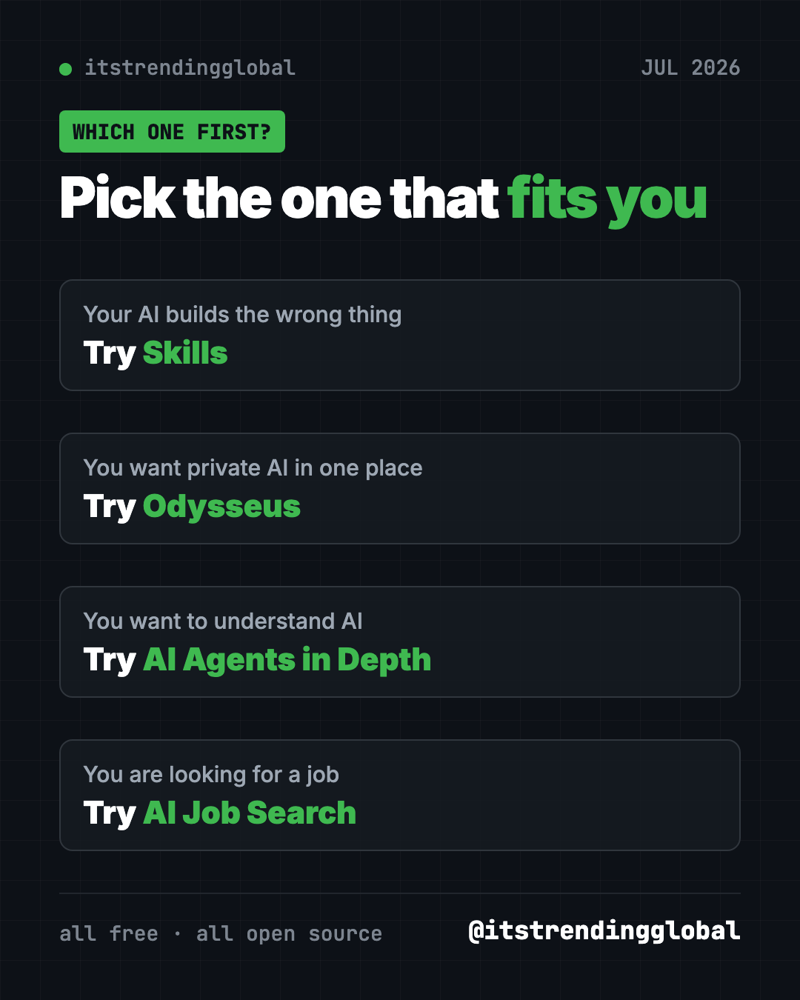

Best GitHub Repos of July 2026 (Free AI Tools)
- Published 15 Oct 2026
- Updated 16 Oct 2026
- 9 min read
- By the ITG Now team
In this guide (8)
The best GitHub repos July 2026 had to offer were Matt Pocock's Skills, Odysseus, a free book on AI agents and AI Job Search. All four are free and open source, and each gained more than 24,000 GitHub stars in the month. We left one trending repo out because it doesn't fit our safety rules.
A GitHub star is like a bookmark or a "like." Two of July's winners were repeat stars from June. The two newcomers are more personal: a book that explains how AI assistants work and a helper for your job search. For each one you get everyday uses, the exact setup, and a prompt for your AI helper.
Key takeaways
- Skills by Matt Pocock was the top repo of July 2026, with about 40,000 new stars. It gives AI coding helpers proven work habits.
- Odysseus, a private AI workspace, stayed hot for a second month.
- AI Agents in Depth is a free, open book that explains how AI assistants are built, with 109 hands-on experiments.
- AI Job Search uses Claude Code to score job ads, tailor your CV and prep you for interviews. Its author says it got him hired.

The 4 best GitHub repos of July 2026 at a glance
| Repo | What it does | Who it's for | Free? | Platforms |
|---|---|---|---|---|
| Skills | Proven work habits for AI coding helpers | Anyone building with AI | Yes (MIT) | Claude Code, Codex, Copilot, Gemini CLI |
| Odysseus | Private AI workspace on your own machine | Privacy fans, small teams | Yes (AGPL-3.0) | Any computer with Docker |
| AI Agents in Depth | Free book on how AI assistants work | Curious learners, students | Yes (Apache-2.0) | Web, PDF, EPUB |
| AI Job Search | Job hunt helper built on Claude Code | Job seekers | Yes (MIT), Claude Code is paid | Mac, Windows, Linux |
Star gains are for July 2026 only. Total star counts below were checked on GitHub on October 16, 2026.
💡 Tip: Some steps use the "terminal," a plain text window where you type commands. On a Mac, open Terminal. On Windows, open PowerShell. Paste a line, press Enter, and wait.
1. Skills: expert work habits for your AI helper
Stars: +40K in July · about 293K total
What it is: Matt Pocock, a well-known coding teacher, shares the skills he uses every day. A skill is a short set of instructions an AI follows for one kind of job. His favorite, /grill-me, makes the AI ask you questions until your plan is clear. Others add tests, careful bug fixing and planning for big jobs. It was also a top repo in June.
Who it's for: Anyone whose AI helper keeps building the wrong thing.
How you'd use it:
- Run
/grill-mebefore any new plan, even a trip or a budget. - Use
/teachto have the AI teach you a new topic over several sessions. - Use
/handoffto sum up a long chat for a fresh session.
Install it: For Claude Code, copy and paste this into your terminal:
claude plugin install mattpocock-skills@claude-plugins-official
Then run /setup-matt-pocock-skills once inside your project.
Or let Claude or Codex do it: Claude Code and OpenAI Codex are AI helpers that can run setup steps for you. Paste this:
Install Matt Pocock's skills from https://github.com/mattpocock/skills
following the README for this agent. Then use grill-me to help me plan
a small website for my side business.
See Skills on GitHub · Read the full guide
2. Odysseus: your own private AI workspace
Stars: +26K in July · about 94K total
What it is: Odysseus puts AI chat, research reports, a document editor, email, notes, tasks and a calendar in one app you run yourself. Nothing has to live on a company's servers. It works with AI models on your machine or online ones you connect.
Who it's for: People who want their AI work private and in one place.
How you'd use it:
- Ask for a researched report on a topic, with sources.
- Let it sum up your inbox and draft replies.
- Keep notes and tasks next to the AI that helps with them.
Install it: Install Docker first. Then copy and paste this:
git clone https://github.com/odysseus-dev/odysseus.git
cd odysseus
cp .env.example .env
docker compose up -d --build
Open http://localhost:7011. The first admin password is in docker compose logs odysseus.
Or let Claude or Codex do it:
Set up Odysseus from https://github.com/odysseus-dev/odysseus using its
Quick Start. Install Docker if needed, find the admin password in the logs,
and open it in my browser.
See Odysseus on GitHub · Read the full guide
3. AI Agents in Depth: a free book on how AI assistants work
Stars: +24K in July · about 54K total
What it is: This is a free, open book by Bojie Li, first written in Chinese. Its core idea fits in one line: an AI agent is a language model plus context plus tools. Ten chapters go from the basics to memory, tools, coding agents, testing and teams of agents. It comes with 109 hands-on experiments. It comes in 15 languages, including English. Volunteers made every version except the Chinese one.
Who it's for: Curious people who use AI every day and want to know what is going on inside. Also students and new developers.
How you'd use it:
- Read chapter 1 to finally understand what makes an "agent" different from a chatbot.
- Jump to the memory chapter to see how assistants remember you across chats.
- Run a small experiment from the book to see the ideas work for real.
Install it: No install needed. Read it online in your browser, or download the English PDF. To run the chapter 1 experiments, clone the repo, then copy and paste this inside its folder:
uv sync --locked --extra ch1
uv run python chapter1/context/main.py
Or let Claude or Codex do it:
Clone https://github.com/bojieli/ai-agent-book and set up the chapter 1
experiments following its README. Ask me before adding any API key.
Run one experiment and explain in plain words what it shows.
⚠️ Heads up: The English and other translations are made by volunteers and may lag behind the Chinese original. Experiments that call an AI model need an API key, which may cost money.
See AI Agents in Depth on GitHub

4. AI Job Search: let Claude help you land a job
Stars: +24K in July · about 47K total
What it is: AI Job Search turns Claude Code into a job application assistant. You fill in your profile once. Then it searches job sites, scores how well each ad fits you, writes a tailored CV and cover letter, and has a second AI review them. It can also prep you for interviews. The author, a geophysicist who lost his job in late 2025, built it for his own search. He says it led to 69 applications, 20 first interviews and one signed contract.
Who it's for: Job seekers who are comfortable trying a few setup steps.
How you'd use it:
- Paste a job ad and get an honest fit score with a recommendation.
- Get a CV and cover letter tailored to one specific posting.
- Run
/interviewfor a prep pack before a real interview.
Install it: You need Claude Code, Python, Bun and LaTeX (a free tool that makes neat PDFs). Then copy and paste this:
gh repo fork MadsLorentzen/ai-job-search --clone
cd ai-job-search
python3 tools/install_portal_clis.py
Then start claude and type /setup.
Or let Claude or Codex do it:
Set up https://github.com/MadsLorentzen/ai-job-search for my own job
search. Use a private repository, not a public fork, as its SETUP.md
section 8 explains. Install what is missing, then run /setup with me.
⚠️ Heads up: A GitHub fork is always public, and
/setupsaves your personal details in it. For your own search, use a private copy. Also, Claude Code has no free tier, so you need a paid plan or API credits.
See AI Job Search on GitHub · Read the full guide
Which one should you try first?
- Your AI helper builds the wrong thing: start with Skills.
- You want AI chat, email and notes in one private place: try Odysseus.
- You want to understand AI, not install it: read AI Agents in Depth. Just a browser.
- You are looking for work: try AI Job Search, if you have Claude Code.

Brand new to all this? Start with the book. It costs nothing and needs no setup.
For the bigger picture, read July 2026 in AI. You can also look back at June's top repos or ahead to August's.
FAQ
What were the best GitHub repos of July 2026?
The top four by stars gained were Matt Pocock's Skills, Odysseus, AI Agents in Depth and AI Job Search. Each gained between about 24,000 and 40,000 stars in July.
Are these GitHub repos free?
Yes, all four are free and open source. AI Job Search needs Claude Code, which is paid. Odysseus can connect to paid AI services if you choose.
Is AI Agents in Depth available in English?
Yes. Volunteers translated it into English and 13 other languages. The translations may lag behind the Chinese original.
Is AI Job Search safe for my personal data?
It runs on your own machine, but it saves your details in files in your copy of the project. Use a private repository, not a public fork, as the README advises.
What are trending GitHub repos for agentic AI from July 2026?
Skills and Odysseus both work with AI agents, and the AI agent book explains how agents are built. An agent is an AI helper that can take actions, not just chat.
Keep reading

Trending GitHub Repos October 2026: The Top 5 So Far
The trending GitHub repos of October 2026 so far: a free Photoshop-style editor, an AI art studio, a big AI model for gaming PCs and more, explained.

Trending GitHub Repos This Week, Oct 5 2026: The Top 5
Trending GitHub repos this week Oct 5 2026: Matt Pocock's skills, the openGym workout tracker, e2e testing, HyperFrames video and claude-mem memory.

GitHub Trending September 28, 2026: Hindsight and Paperclip
GitHub trending September 28 2026: Hindsight, Paperclip, NVIDIA's OpenShell and a free 542-lesson AI course, with setup steps for each.